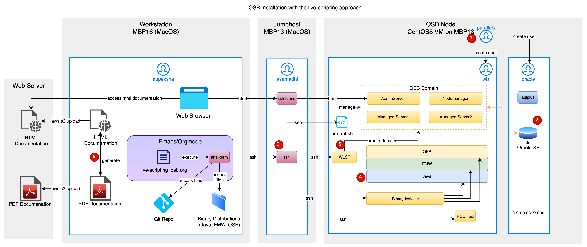

Installation of Oracle OSB using Live-Scripting medthod
#xxx+OPTIONS: toc:4 H:4
This report describes the installation of Oracle FMW and OSB using the Live-Scripting-Method
| live-scripting_osb.pdf | |
| HTML Documentation | live-scripting_osb.html |
Table of Contents
1. Introduction
This project demonstrates the live-scripting process, which combines command-line-work and documentation in the context of an Oracle Service Bus installation.
1.1. Motivation
Oracle Service Bus (OSB) is widely utilized, boasting a substantial installation base. Although new projects are currently rare, its complex environment prevails. Expertise is often sought after for version migrations and the integration of new solutions. In the context of Oracle Service Bus (OSB) installation, live-scripting is a powerful approach that combines the execution of command-line operations with detailed documentation to create a reliable and well-documented installation process. Live-scripting benefits OSB installation in the following ways:
Reproducibility: Live-scripting ensures that the OSB installation process is reproducible, meaning that anyone following the documented steps can achieve the same results. This is particularly important in enterprise environments, where consistency and reliability are paramount. Even if the installation needs to be repeated months or years later, the documented process guarantees the same outcome.
Documentation: The process of live-scripting creates precise documentation that captures each step involved in the process. This documentation goes beyond simple command lists; it includes explanations, diagrams, attachments and solutions to potential issues that may arise. This detailed documentation is invaluable for troubleshooting, auditing, and knowledge transfer within an organization.
Quality Assurance: Live-scripting serves as a form of quality assurance. The fact that the documented process has been tested and verified during writing, ensures that the documented solution is reliably working and the chances of errors and misconfigurations is minimal.
Knowledge Sharing: The live-scripting approach makes knowledge sharing much more accessible. Team members can easily follow the step-by-step instructions, regardless of their level of expertise. Even if they don't want to use Emacs, the solution can be reproduced using a copy-and-paste approach. It accelerates the training process for new team members and can help disseminate best practices across the organization.
Flexibility and adaptability: Live-scripting isn't limited to a one-size-fits-all approach. It can be adapted and extended as needed. Users can modify the documented process to accommodate unique requirements or make improvements over time without sacrificing the stability and reliability of the installation.
Efficiency: Live-scripting streamlines the installation process by providing a clear and efficient path from start to finish. It minimizes the time and effort required to set up OSB, making it more accessible for both experienced and novice users.
In contrast to a fully automated setup, which is often used in large OSB installations, encompassing hundreds of domains and environments, the approach proposed by live-scripting does not require to write, test and maintain automation code. Live-scripting is best used in situations where only a limited number of environments are required. It ranges between a classical manual approach on the one hand and a fully automated solution on the other. In summary, live-scripting is a powerful methodology in the context of command-line-centered work, especially during OSB installation. It ensures a reproducible, well-documented, and reliable installation process, which is crucial in complex enterprise environments. This approach not only guarantees quality and consistency but also promotes knowledge sharing, adaptability, and efficiency in managing installations.
1.2. Architecture
The architecture of the OSB domain is simple, it consists of an admin server and two cluster nodes, all running on a single machine. The architecture diagram, however, also depicts the machines and components required to install and set up the OSB domain.

Figure 1: Architecture Diagram for the Installation of Oracle Service Bus
It uses three machines: A workstation for development and installation tasks, a jump host which adds a level of security and limits access to the OSB environment, and a Linux node for running all components of the OSB domain. Since this project demonstrates the live-scripting approach, the workstation contains an Emacs installation that is prepared to execute shell commands in an ansi-term. It uses ssh to connect to the target machine via the jump server. The whole installation process can conceptually be broken down into six steps, which are depicted by the red numbered dots in the diagram.
Step 1: In this step, the machine of the OSB node is provisioned. In my case, it is a virtual machine running on a MacBook Pro using Parallels as the hypervisor. The workstation is connected to the jump host using tailscale. It has no direct network connection to the VM. This situation resembles a typical setup in on-premise data centers and cloud environments. The Unix user parallels on this machine is used to create two additional users: oracle and wls, which will become the installation users for the database and the OSB environment, respectively.
Step 2: In this step, I install an Oracle Express Edition database, which is required for all FMW installations. It stores metadata for the operation of the OSB domain.
Step 3: During this step, I will provide the prerequisites for the subsequent installations. This includes establishing ssh trust for the workstation user aupeksha to access the jump host and the OSB-Node and to copy the software distribution to the target machine.
Step 4: This step consists of the software installation for Java, FMW and OSB. In a multi-machine environment, it would be necessary for every OSB node. In this simple example, however, there is only one machine.
Step 5: In this step, the OSB domain is created. This starts with creating the database schemas using the RCU tool. The domain will be created with the WLST (WebLogic Scripting Tool), which executes a Python script that runs the necessary installation and configuration tasks.
Step 6: The documentation is an integral part of the live-scripting approach. It is generated directly in the Emacs editor as a static HTML page and a PDF file. Both are published to a web server.
2. Linux Installation
I create a new CentOS VM, using Parallels Desktop.
2.1. Download and Check Sums
I use the Download Mirror. https://ftp.fau.de/centos/8-stream/isos/x86_64/
## On VM host machine: Samadhi whoami; hostname; pwd cd ~/Downloads #SHA256 (CentOS-Stream-8-20231009.1-x86_64-dvd1.iso) = e9b7a2026ac7abc315638bcb2efe9482576b4fd7ff0e8759c6ec6861b1549be8 shasum -a 256 CentOS-Stream-8-20231009.1-x86_64-dvd1.iso # ok.
Result: The ISO-image for the installation of Centos 8 is available for installation with parallels desktop. The checksum is verified against the values from the down load website.
2.2. Installing the VM
On the Parallels Host machine Samadhi, I will now install the ISO image with the Prallels GUI Installer. Screenshots of the installation: data/Linux_Installation/2023-10-13_15-56-11_2023-10-11_16-57-40-3.pdf After the installation I login via ssh and check the os version .
### Login to Linux Machine via Jump Host ssh asamadhi@samadhi #Jumphost password1 #Centos8 VM ## user/pw parallels/ham2burg ssh parallels@10.211.55.5 # Centos_8 ham2burg whoami; hostname; pwd ## Check Release cat /etc/os-release cat /etc/centos-release
The release is printed out on the terminal. It is CentOS Version 8.
[parallels@localhost ~]$ ## Check Release [parallels@localhost ~]$ cat /etc/os-release NAME="CentOS Stream" VERSION="8" ID="centos" ID_LIKE="rhel fedora" VERSION_ID="8" PLATFORM_ID="platform:el8" PRETTY_NAME="CentOS Stream 8" ANSI_COLOR="0;31" CPE_NAME="cpe:/o:centos:centos:8" HOME_URL="https://centos.org/" BUG_REPORT_URL="https://bugzilla.redhat.com/" REDHAT_SUPPORT_PRODUCT="Red Hat Enterprise Linux 8" REDHAT_SUPPORT_PRODUCT_VERSION="CentOS Stream" [parallels@localhost ~]$ cat /etc/centos-release CentOS Stream release 8
I want to allow user parallels to sudo without password. This can be done with visudo which is an interactive editing task.
# User /parallels/ is allowed to sudo without password # Use ~sudo visudo~ and insert this line. /parallels ALL=(ALL) NOPASSWD: ALL/
Result: The CentOS8 VM is installed. Access via ssh is working. The user parallels can execute sudo without password.
2.3. Snapshot01
I take a snapshot of the CentOS_8 VM with the following contents.
Snapshot01:
[X]Download CentOS Stream 8 using the Parallels Desktop GUI[X]Installation CentOS Stream 8[X]User=parallels, password=ham2burg[X]Parallels Tools Installation[X]Automatic Login, Screensaver off, Autopower-off=false.[X]Settings Network->Wired= on[X]SSH Login with: parallels@10.211.55.5[X]yum udpate[X]Renaming VM to CentOS_8[X]Allocating 4 CPUs and 8 GB RAM[X]Creating Snapshot01
2.4. Conclusion
The Centos_8 VM is set up. Remote login with user parallels is working. A snapshot of the VM is saved.
3. Database Setup
The FMW-installation requires a database for configuration data and runtime metrics. In this step I will setup and configure the Oracle Express Edition Database.
3.1. Creating SSH Trust for the user parallels
I want to have key-based ssh-login for the users parallels. It should share a common key-pair with other users: lab_key.
# Listing: Creating SSH Trust for user parallels ### We start on the workstation ## Test connection to Jumphost and VM ssh asamadhi@samadhi "hostname; whoami" # JumpHost via tailscale ssh -J asamadhi@samadhi parallels@10.211.55.5 "hostname; whoami" password1 password2 ### Create public/private key-pair for communication with multiple machines on jump host hostname; whoami cd ~/.ssh ls -la ssh-keygen -t ed25519 -C "lab_key" lab_key ## copy public+private key to jumphost ls -la scp asamadhi.pub asamadhi@samadhi:/Users/asamadhi/.ssh/ scp lab_key.pub asamadhi@samadhi:/Users/asamadhi/.ssh/ scp lab_key asamadhi@samadhi:/Users/asamadhi/.ssh/ password1 ## paste public key to authorized keys for user asamadhi ssh asamadhi@samadhi "cat /Users/asamadhi/.ssh/lab_key.pub >> /Users/asamadhi/.ssh/authorized_keys" ssh asamadhi@samadhi "chmod 600 /Users/asamadhi/.ssh/authorized_keys" ssh asamadhi@samadhi "cat /Users/asamadhi/.ssh/authorized_keys" ssh asamadhi@samadhi "ls -la /Users/asamadhi/.ssh/" password1 ## Add config entry for jumphost cat ~/.ssh/config cat << 'EOF' >> ~/.ssh/config Host jumphost IdentitiesOnly yes IdentityFile ~/.ssh/lab_key Hostname samadhi User asamadhi EOF # Test ssh trust ssh -i ~/.ssh/lab_key asamadhi@samadhi "whoami; hostname; date" ssh jumphost "whoami; hostname; date" ### copy public key to VM from JumpHost ssh -i ~/.ssh/lab_key asamadhi@samadhi hostname; whoami; pwd ls -la ~/.ssh/ scp ~/.ssh/lab_key.pub parallels@10.211.55.5:/tmp/lab_key.pub ham2burg ## paste public key to authorized keys for user parallels ssh parallels@10.211.55.5 ham2burg mkdir -p /home/parallels/.ssh cat /tmp/lab_key.pub > /home/parallels/.ssh/authorized_keys chmod 600 /home/parallels/.ssh/authorized_keys cat /home/parallels/.ssh/authorized_keys exit # Test ssh trust on jumphost to CentOS8 ssh -i ~/.ssh/lab_key parallels@10.211.55.5 "whoami; date" ls -la ~/.ssh/ exit #samadhi ### Access via JumpHost ssh -J jumphost -i ~/.ssh/lab_key parallels@10.211.55.5 "whoami; hostname; date" ## Add config entry for centos VM cat ~/.ssh/config cat << 'EOF' >> ~/.ssh/config Host centos8_parallels IdentitiesOnly yes IdentityFile ~/.ssh/lab_key Hostname 10.211.55.5 User parallels ProxyJump jumphost EOF ## Test direct access to centos VM via jumphost using config file ssh centos8_parallels "whoami; hostname; pwd"
Result: SSH Trust ist now established for the users parallels using config file and key-authentication. This enables password-less ssh access via a jumphost to the centos VM.
3.1.1. DONE Problem: SSH-Connection with public keys does not work.
Although I provide a valid key, the ssh command prompts for a password.
Analysis: I ran ssh with debug flag (-vvv)
debug1: Offering public key: /Users/asamadhi/.ssh/lab_key ED25519 SHA256:VlBgbKyKKJocYsRRVD9Qi9nN9XFDXf2uXN1wGf2P4Dg explicit debug3: send packet: type 50 debug2: we sent a publickey packet, wait for reply debug3: receive packet: type 51 Debug1: Authentications that can continue: publickey,gssapi-keyex,gssapi-with-mic,password
Solution: Changing the permissions of the directory .ssh on the CentOS8 machine solves the problem. chmod 700 ~/.ssh
3.2. Database Installation
The database can be downlaoded: Oracle Database Express Edition (XE) Downloads | Oracle Deutschland
| Oracle Database 21c Express Edition for Linux x64 ( OL8 ) | (2,339,651,768 bytes - September 08, 2021) | [Sha256sum: f8357b432de33478549a76557e8c5220ec243710ed86115c65b0c2bc00a848db] |
Now I copy the database binaries to the target machine and start the installer. After successful installation I configure a database and verify that it is working and the the listener is started.
## preparing target dist directory ssh centos8_parallels whoami; hostname; pwd sudo su ham2burg mkdir -p /opt/install/db chown parallels:parallels /opt/install chown parallels:parallels /opt/install/db exit #root exit #centos8_parallles ## Checking and copying distribution form local workstation to centos VM cd ~/LocalProjects/dist/db ls -la ## Check SHA256 of RPM #Sha256sum: f8357b432de33478549a76557e8c5220ec243710ed86115c65b0c2bc00a848db sha256sum oracle-database-xe-21c-1.0-1.ol8.x86_64.rpm # ok. ## Copy distributions VM ls -la rsync -aP oracle-database-preinstall-21c-1.0-1.el8.x86_64.rpm \ oracle-database-xe-21c-1.0-1.ol8.x86_64.rpm centos8_parallels:/opt/install/db ## Check distributions as user parallels ssh centos8_parallels "ls -la /opt/install/db" ### Installation of Database as root ssh centos8_parallels whoami; hostname; pwd sudo su - ## Preinstallation cd /opt/install/db yum -y localinstall oracle-database-preinstall-21c-1.0-1.el8.x86_64.rpm ## Install Database yum -y localinstall oracle-database-xe-21c-1.0-1.ol8.x86_64.rpm # ok. ### Creating a Database ls /etc/init.d/oracle-xe* /etc/init.d/oracle-xe-21c configure ham2burg ham2burg # ok. exit #root whoami ### Testing the Database: as user user oracle sudo su - oracle export ORACLE_SID=XE export ORAENV_ASK=NO ls /opt/oracle/product/21c/dbhomeXE/bin/oraenv . /opt/oracle/product/21c/dbhomeXE/bin/oraenv set ORACLE_HOME = [] ? /opt/oracle/product/21c/dbhomeXE echo $ORACLE_HOME ls -la $ORACLE_HOME ## start sqlplus #sqlplus sys/ham2burg@//localhost.localdomain:1521/XEPDB1 as sysdba sqlplus sys/ham2burg@//localhost:1521/XEPDB1 as sysdba ## Check PDBs select name from v$pdbs; ## connecting to default PDB #conn sys/ham2burg@//localhost.localdomain:1521/XEPDB1 as sysdba conn sys/ham2burg@//localhost:1521/XEPDB1 as sysdba ## Ok. Successfully connected. exit #sqlplus exit #oracle ## check listener lsnrctl status
Result: The Oracle database is now installed. The listener is configured and started. Connection via sqlplus is working.
3.3. Autostart Configuration
I want to configure the database for automatic start after machine boot. This is done on the Linux level.
ssh centos8_parallels whoami; hostname sudo su systemctl daemon-reload systemctl enable oracle-xe-21c exit #root exit #parallels
Result: The linux operating system is configured to start the database service automatically on machine boot.
3.4. Database Operation
The database can be started and stop with the sysctl utility.
## work on the CentOS8 as user parallels. ssh centos8_parallels whoami; hostname # Show Usage Message sudo /etc/init.d/oracle-xe-21c # Datenbank starten sudo /etc/init.d/oracle-xe-21c status sudo /etc/init.d/oracle-xe-21c stop sudo /etc/init.d/oracle-xe-21c start ### Checking the Listner ### User must be oracle sudo su - oracle ### Setting Envrionment and checking listner export ORACLE_SID=XE export ORAENV_ASK=NO . /opt/oracle/product/21c/dbhomeXE/bin/oraenv set ORACLE_HOME = [] ? /opt/oracle/product/21c/dbhomeXE echo $ORACLE_HOME ls -la $ORACLE_HOME ## check listener lsnrctl status exit #oracle exit #centos8_paralles whoami
Result: This listing demonsrates how to control the database. It can be used to check the status of the database and the listener and to start and stop the database.
3.5. Snapshot02
I take a snapshot of the CentOS_8 VM with the following contents.
Snapshot02:
[X]Uploading RPMs for Oracle-Database-XE-21c Database[X]Setting up SSH-Trust for user parallels.[X]Installation of Oracle-Database-XE-21c Database[X]Testing the database[X]Lifecycle operations on database[X]Automatic database start after reboot is tested.[X]VM is powered of[X]Creating Snapshot02
3.6. Conclusion
At this stage of development, the Oracle-Database-XE-21c is installed and starts automatically with the VM. The commands to start and stop the database are tested.
4. Preparing the FMW Installation
4.1. Setup of the installation user
I want to install OSB with a dedicated unix user: wls. It should be a login user and I want to establish ssh-trust for key-based ssh login.
### Login to VM ssh centos8_parallels ### create user wls sudo useradd --defaults sudo useradd --comment "OSB User" --create-home --user-group wls sudo passwd wls ham2burg ham2burg exit
Result: The user wls is now created and can login with a password.
4.2. Creating SSH Trust
I want to have key-based login for the user wls. It should share a common key-pair: lab_key. Therefore the user wls must accept the public key lab_key.pub.
### We start on the workstation ## copy public key to the VM whoami; hostname cd ~/.ssh/ ls -la scp ~/.ssh/lab_key.pub centos8_parallels:/tmp/lab_key.pub # Add public key to authoried hosts. ssh centos8_parallels ## paste public key to authorized keys for user wls sudo su - wls mkdir -p /home/wls/.ssh/ chmod 700 /home/wls/.ssh cat /tmp/lab_key.pub > /home/wls/.ssh/authorized_keys chmod 600 /home/wls/.ssh/authorized_keys exit #wls exit #parallels # Test ssh trust ssh -J jumphost -i ~/.ssh/lab_key wls@10.211.55.5 "whoami; hostname; date" ## Add config entry for centos VM cat ~/.ssh/config cat << 'EOF' >> ~/.ssh/config Host centos8_wls IdentitiesOnly yes IdentityFile ~/.ssh/lab_key Hostname 10.211.55.5 User wls ProxyJump jumphost EOF ## Test direct access to centos VM via jumphost using config file ssh centos8_wls "whoami; hostname; pwd"
Result: SSH trust is now established for the users parallels and wls using config file and key-authentication. This enables password-less ssh access via a jumphost to the centos VM.
4.3. Copying the Oracle Distributions
I have already downloaded the distribution for java, fmw, and osb to the workstation. In this step I copy it to the target machine.
### whoami; hostname ssh centos8_parallels ### create project installation base sudo mkdir -p /opt/install/ sudo chown -R wls:wls /opt/install ls -la /opt/install find /opt/install exit # create dir for distributions as wls user ssh centos8_wls date; whoami; hostname mkdir -p /opt/install/dist exit ## Copy distributions (from workstations) whoami; date; hostname cd /Users/aupeksha/LocalProjects/dist/osb ls -la rsync -aP fmw_12.2.1.4.0_infrastructure_Disk1_1of1.zip \ p18143322_1800_Linux-x86-64.zip \ p30188261_122140_Linux-x86-64.zip \ p30188305_122140_Generic.zip centos8_wls:/opt/install/dist ## Check distributions as user wls ssh centos8_wls "ls -la /opt/install/dist"
I also copy the project files to the VM with rsync. In this way I can edit the file on the workstation and update changed files.
cd /Users/aupeksha/LocalProjects/live-scripting_osb/ ## Copy or Update directory rsync -aP live-scripting_fmw centos8_wls:/home/wls/ ## Check distributions as user wls ssh centos8_wls "ls -la /home/wls/live-scripting_fmw" ssh centos8_wls "find /home/wls/live-scripting_fmw" ##
Result: The project files and software distributions are now available on the target machine under the user wls.
5. Installation für FMW
5.1. Templates
I want to use template mechanism to replace variables in configuration files. There is discussion on stackoverflow that compares different approaches. Bash Templating: How to build configuration files from templates with Bash? - Stack Overflow I will use the templating approach using substenv. I will define some environment variables in the file setEnv_osb.sh, which will be sourced to the shell environment. Configuration and script files can now contain shell variables that will be replaced during the installation. Thus I can support different stages and environments with one set of script and configuration files.
5.2. Java Installation
Java is unpacked (unzip) to a temporary directory and subsequently installed to the target Java directory using tar.
### Install Java as user wls ssh centos8_wls date; hostname; pwd; whoami # set project environment cd ~/live-scripting_fmw; . ./setEnv_osb.sh ## unzip to temporary directory mkdir -p $JAVA_TEMP_DIR unzip $DIST_JAVA -d $JAVA_TEMP_DIR ## untar jav mkdir -p $JAVA_DIR ls ${JAVA_TEMP_DIR}/jdk*.tar.gz tar zxvf ${JAVA_TEMP_DIR}/jdk*.tar.gz -C $JAVA_DIR ls $JAVA_DIR echo $JAVA_HOME ## check java $JAVA_HOME/bin/java -version # java(TM) SE Runtime Environment (build 1.8.0_311-b25) $JAVA_HOME/bin/jar -version ## clean up rm -rf $JAVA_TEMP_DIR ls $JAVA_TEMP_DIR exit #centos_wls
Result: Java is installed into a dedicated directory and can be called after setting the JAVA_HOME variable.
5.3. FWM Installation
Now I will install the Fusion Middleware binaries on the target machine. A response file will be prepared using the template approach.
### FWM Installation using wls user ssh centos8_wls date; hostname; pwd; whoami # set project environment cd ~/live-scripting_fmw; . ./setEnv_osb.sh # Installation of binaries mkdir -p ${TEMP_DIR_FMW} unzip ${DIST_FMW} -d ${TEMP_DIR_FMW} ls -la ${TEMP_DIR_FMW} # Creating Response File cd $PROJECT_HOME envsubst < fmw.rsp.template > fmw.rsp cat fmw.rsp ## Creating inventory log file cat << EOF > ${INV_PTR_LOC} inventory_loc=/home/wls/oraInventory inst_group=wls EOF cat ${INV_PTR_LOC} ls -la # Checking prerequisites ls ${TEMP_DIR_FMW}/*.jar ${JAVA_HOME}/bin/java -Djava.io.tmpdir=${TEMP_DIR_FMW} -jar ${TEMP_DIR_FMW}/*.jar \ -responseFile ${PROJECT_HOME}/fmw.rsp \ -invPtrLoc ${INV_PTR_LOC} \ -silent \ -executeSysPrereqs ## Installing FMW ${JAVA_HOME}/bin/java -Djava.io.tmpdir=${TEMP_DIR_FMW} -jar ${TEMP_DIR_FMW}/*.jar \ -responseFile ${PROJECT_HOME}/fmw.rsp \ -invPtrLoc ${INV_PTR_LOC} \ -silent \ -logLevel finest \ -debug \ -printdiskusage \ -printmemory \ -printtime # clean up rm -rf ${TEMP_DIR_FMW} exit # centos_wls
Result: The FMW Binaries are now installed.
5.4. OSB Installation
I now install the binaries for the OSB.
### FWM Installation using wls user ssh centos8_wls date; hostname; pwd; whoami # set project environment cd ~/live-scripting_fmw; . ./setEnv_osb.sh # Installation of binaries mkdir -p ${TEMP_DIR_FMW} unzip ${DIST_OSB} -d ${TEMP_DIR_FMW} ls -la ${TEMP_DIR_FMW} # Creating Response File cd $PROJECT_HOME envsubst < osb.rsp.template > osb.rsp cat osb.rsp ls -la # Checking prerequisites ls ${TEMP_DIR_FMW}/*.jar ${JAVA_HOME}/bin/java -Djava.io.tmpdir=${TEMP_DIR_FMW} -jar ${TEMP_DIR_FMW}/*.jar \ -responseFile ${PROJECT_HOME}/osb.rsp \ -invPtrLoc $INV_PTR_LOC \ -silent \ -executeSysPrereqs ## Installing OSB ${JAVA_HOME}/bin/java -Djava.io.tmpdir=${TEMP_DIR_FMW} -jar ${TEMP_DIR_FMW}/*.jar \ -responseFile ${PROJECT_HOME}/osb.rsp \ -invPtrLoc $INV_PTR_LOC \ -silent \ -logLevel finest \ -debug \ -printdiskusage \ -printmemory \ -printtime # clean up rm -rf ${TEMP_DIR_FMW} exit #centos_wls
Result: The OSB binaries are installed on the target machine. It is ready for domain creation.
5.5. Cleaning up
After installing the binaries, I delete the installation medias, to save space on the VM. Otherwise it will unecessarily waste disk space in the snapshots.
whoami; hostname ## Login to VM as parallels users ssh centos8_parallels cd /opt/install/dist ls -la ## delete installation media for middleware sudo rm p* sudo rm fmw* ## delel database installation media cd /opt/install/db sudo rm oracle* ls -ls exit
Result: The installation medias for the database and for java, fmw and osb are now removed from the vm, thus saving disk space in snapshots.
6. Creating the OSB Domain
There are several steps necessary to create the OSB domain. In a first step I will create the required database schemes using the RCU tool. The domain is will be created without the GUI installer. Instead WLST is used together with a python script, which runs the installation. The python script will be customized, using the template approach.
6.1. Checking the database
Before running the RCU tool I need to check that the database is started and listening.
6.1.1. Starting and stopping the database
This is done using the init.d script.
ssh centos8_parallels # Zeige die Usage Message sudo /etc/init.d/oracle-xe-21c # Datenbank starten sudo /etc/init.d/oracle-xe-21c start sudo /etc/init.d/oracle-xe-21c restart sudo /etc/init.d/oracle-xe-21c status
Ok, the database is running. I know check the TNS listener.
6.1.2. Verifying the database listener
I change to the user oracle and set the environment for checking the listener with lsnrctl
### User must be oracle sudo su - oracle ### Setting Envrionment and checking listner export ORACLE_SID=XE export ORAENV_ASK=NO . /opt/oracle/product/21c/dbhomeXE/bin/oraenv set ORACLE_HOME = [] ? /opt/oracle/product/21c/dbhomeXE echo $ORACLE_HOME ls -la $ORACLE_HOME ## check listener lsnrctl status exit #oracle exit #centos8_paralles
Result: The database and the listner are started.
6.2. Running the RCU tool
I will use the RCU-Tool to create the database schemes, which is a prerequisite for OSB domain creation. I use the template approach to customize the response file. The execution of the RCU-Tool takes several minutes.
### RCU execution using wls user ssh centos8_wls date; hostname; pwd; whoami # set project environment cd ~/live-scripting_fmw; . ./setEnv_osb.sh # Creating Response File cd $PROJECT_HOME ls -la envsubst < rcu_osb.rsp.template > rcu_osb.rsp cat rcu_osb.rsp ### Checking prerequisites. It needs: # - database password for user sys # - schema pasword ${FMW_HOME}/oracle_common/bin/rcu -silent -responseFile ${PROJECT_HOME}/rcu_osb.rsp -validate ham2burg ham2burg ## Success=status 0 ### Running RCU ${FMW_HOME}/oracle_common/bin/rcu -silent -responseFile ${PROJECT_HOME}/rcu_osb.rsp ham2burg ham2burg exit #centos_wls
Result: The database schemes for the OSB domain are created. The database is ready for osb domain creation.
6.3. OSB domain creation
I will now create the domain using WLST and the python script createOSBDomain.py. The python script originates from the OSB documentation and was modified to accept customization via the template approach.
### Creating domain using wls user ssh centos8_wls date; hostname; pwd; whoami # set project environment cd ~/live-scripting_fmw; . ./setEnv_osb.sh # Creating WLST File cd $PROJECT_HOME ls -la envsubst < Template_createOSBDomain.py > createOSBDomain.py cat createOSBDomain.py ## Create the domain mkdir -p $DOMAINS cd $PROJECT_HOME ls -la cd $FMW_HOME/oracle_common/common/bin/ ./wlst.sh $PROJECT_HOME/createOSBDomain.py -oh "$FMW_HOME" -jh "$JAVA_HOME" -parent "$DOMAINS" -rcuDb "${CONNECT_STRING2}" exit # centos_wls
Result: The osb domain is created and can be started in the next step.
6.4. Starting the OSB domain
I will use the start scripts from the OSB installation to start the Nodemanager and the Adminserver. As a prerequisite I create boot.properiies files which allow for password-less script-based domain start from the command line.
I also introduce a small self-developed control script to start and stop the domain and to produce a log file report, based on a perl script.
ssh centos8_wls date; hostname; pwd; whoami # set project environment cd ~/live-scripting_fmw; . ./setEnv_osb.sh cd $DOMAIN_HOME; ls -la ### Creating boot.properties mkdir -p $DOMAIN_HOME/servers/AdminServer/security cd $DOMAIN_HOME/servers/AdminServer/security ls -la; pwd echo username=${DOMAIN_USER} > boot.properties echo password=${DOMAIN_PASSWORD} >> boot.properties cat boot.properties #rm boot.properties ### Start the Nodemanager cd $DOMAIN_HOME #./bin/startNodeManager.sh nohup ./bin/startNodeManager.sh > NodeManager.out 2>&1 & ## Start AdminServer (nohup) nohup ./startWebLogic.sh > AdminServer.out 2>&1 & ## Check satus tail -f AdminServer.out cat AdminServer.out | grep -e "Server state changed to" cat AdminServer.out | grep -e "Server state changed to RUNNING." cat servers/AdminServer/logs/AdminServer.log | grep "Server state changed to" cat servers/AdminServer/logs/AdminServer.log | grep "Server state changed to RUNNING" ## Wait for running state while (( $(cat AdminServer.out | grep "Server state changed to RUNNING."| wc -m ) < 1 )) do sleep 5 cat AdminServer.out | grep "Server state changed to " done ## prevent perl warnings export LC_ALL=C ### Check for Running Server and NodeManager ps -aelf | perl -ne '/^([^\s]+)\s+([^\s]+)\s+([^\s]+)\s+([^\s]+).*([w]eblogic.NodeManager)/g && print "$3 $4 $5\n" or/^([^\s]+)\s+([^\s]+)\s+([^\s]+)\s+([^\s]+).*([w]eblogic.Name=[^\s]+)/g && print "$3 $4 $5\n"' ### Use the control script cd /home/wls/live-scripting_fmw/bin ls -la ## use control skript to control the domain ./control.sh help ./control.sh status ./control.sh log_report -u ./control.sh log_report -T ./control.sh log_report -rwaS ./control.sh kill ./control.sh startNodemanager ./control.sh startAdmin exit # centos_wls ### create tunnel for access via web browser. whoami; hostname ssh -L 7001:localhost:7001 centos8_wls exit # centos_wls
The OSB is started and access to the web based administration tools is available.
Test URLs:
- http://localhost:7001/console (wls/ham2burg)
- http://localhost:7001/em
- http://localhost:7001/servicebus
Result: The OSB domain is created and started. I also started SSH tunnel that allow to call the OSB Web-Tools without direct network connection.
6.5. Snapshot03
I take a snapshot of the CentOS 8 VM with the following contents:
Snapshot03:
[X]Creating unix user wls[X]Setting up ssh trust for wls[X]Java is installed[X]FMW is installed[X]OSB is installed[X]RCU is executed[X]OSB is created[X]OSB domain has been started and tested.[X]Installation media for databases and middleware are deleted.[X]Snapshot03 is created.
6.6. Conclusion
The necessary software distributions for the OSB, namely Java, FMW and OSB are installed on the CentOS VM. This was done with a dedicated installation user: wls. All steps to create a domain where executed, including RCU and domain configuration and creation with a Python script. The OSB domain was started and testes. Access to the web based administration tools was established using an SSH tunnel.
7. Appendix
This appendix contains additional material that was used during setup, but is not relevant for the final solution. This includes further analysis, troubleshooting, and failed attempts. It only serves reference purposes.
7.1. Problem: Oracle Express Database needs RHEL 8.
I cannot install the database. Error in preinstallation:
[root@localhost db]# yum -y localinstall --nobest oracle-database-preinstall-21c-1.0-1.el8.x86_64.rpm Last metadata expiration check: 0:54:56 ago on Wed 11 Oct 2023 01:08:26 AM CEST. Error: Problem: conflicting requests - nothing provides compat-openssl10 needed by oracle-database-preinstall-21c-1.0-1.el8.x86_64 from @commandline
Attempt: Installation of compat-openssl11. The installation works but it still breaks the pre-install. Conclusion: Oracle XE ist not compatible with RHEL9. I will install CentOS 8